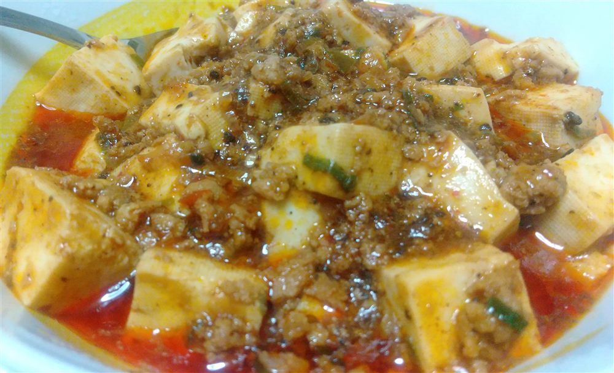
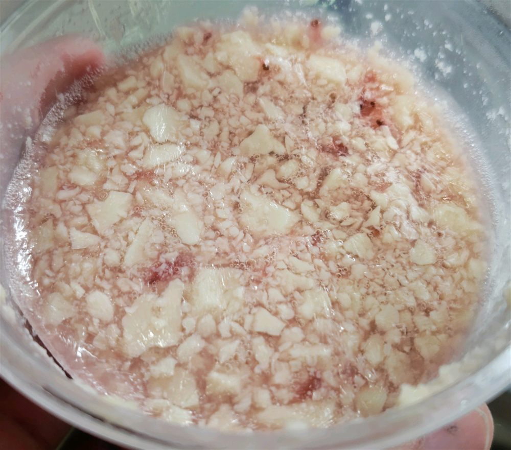

こんな料理に活用できます
公式検索結果には、食事向けからスイーツまで幅広いレシピが掲載されています。献立から探すときは、次のような使い方が参考になります。
主菜ハンバーグ・揚げ物
豆腐を生地に混ぜたり、具材と組み合わせたりする使い方。
麺・ソースパスタ・フォンデュ
なめらかさを生かして、クリームやソースにする使い方。
汁物スープ・グラタン
温かい料理へ加え、食べ応えを足す使い方。
スイーツプリン・アイス
口当たりを生かし、冷たいデザートにする使い方。
公式ページで見つかるレシピ例
2026年6月11日の確認時点では、次のようなレシピが掲載されています。名称は公式検索結果から紹介しています。詳しい材料と作り方は公式ページでご確認ください。
- 豆腐チーズハンバーグ もやしソース
- 豆腐とスキムのキーマカレー
- とうふのホワイトソースグラタン
- とうふクリームの明太子パスタ
- ねぎと豆腐の中華風あったかスープ
- なめらか豆腐プリン
調理するときの注意
- 開封後の豆腐は常温に置かず、商品表示に従って扱う
- 電子レンジやオーブンの加熱時間は機種に合わせて調整する
- 大豆や乳製品など、使用材料のアレルギー表示を確認する
- 公式レシピの最新の材料、分量、注意事項を確認して調理する
ORIGINAL RECIPE
とうふ店長が実際に作ってみました
常温保存豆腐を使って、実際に2品作ってみました。どちらも、いつもの豆腐と同じように使えます。

常温保存豆腐の麻婆豆腐
材料：常温保存豆腐、市販の麻婆豆腐の素
常温保存豆腐を角切りにして、市販の麻婆豆腐の素で煮るだけ。特別な下処理は必要なく、いつもの豆腐と全く同じように作れました。

常温保存豆腐の冷凍フルーチェ
材料：常温保存豆腐300g、フルーチェ（粉末）
- 保存袋に常温保存豆腐300gとフルーチェの粉末を入れる
- 袋の外からよくもみ、豆腐を崩しながら混ぜる
- 容器に入れて冷凍庫で凍らせる
参考・外部リンク
掲載件数やレシピ内容は変更される場合があります。最新情報は森永乳業公式サイトをご確認ください。